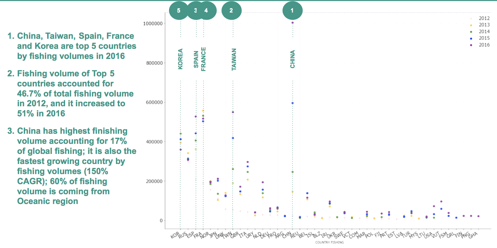

Global Fishing Attack Analysis and Visualization
Commercial Fishing
Feb. 24, 2019
Overview
Working with Global Fishing Watch to visualize fishing activity around the world.
Global Fishing Watch is a website launched in September 2016 by Google in partnership with Oceana and SkyTruth "to provide the world’s first global view of commercial fishing activities." At any moment, 200,000 vessels are publicizing their locations via the Automatic Identification System (AIS).
Global Fishing Watch uses AIS tracking devices and other kinds of information to show what's happening in the oceans around the world. They monitor commercial fishing activity and larger boats.
Data Set Summary
- 5 years of Data : 2012 to 2016
- Types of Inferred Fishing Vehicle :
- trawlers
- fixed_gear
- Purse_seines
- Squid_jigger
- drifting_longlines
- Other_fishing
- No of Countries Fished (determined by ISO_Ter1) : 190
- No of Countries Fishing (determined by vessel flag) : 117
Contents
- Top Countries by Fishing Volume (fishing hours)
- Top Fishing Regions
- Deep dive into top 5 counties by fishing volume
Project Details
Global fishing volume increase at 30% CAGR between 2012 and 2016
Top 30 countries by fishing volumes

- China, Taiwan, Spain, France and Korea are top 5 countries by fishing volumes in 2016
- Fishing volume of Top 5 countries accounted for 46.7% of total finisign volume in 2012, and it increased to 51% in 2016
- China has highest finishing volume accounting for 17% of global fishing; it is also the fastest growing country by fishing volumes
Top 30 Countries Whose Waters Are Fished (determined by hours)

- Top fishing areas by volume (>20K hours of fishing hours in 2016)
- GBR - United Kingdoms (Europe)
- KIR - Kiribati (Oceania)
- IRL - Ireland (Europe)
- SJM - Svalbard and Jan Mayen (Europe)
- SLB - Solomon Islands
- VUT - Vanuatu (Oceania)
- NOR - Norway (Europe)
- Key growth countries in last 2 years
- FLK - Falkland Islands (Malvinas) (South America)
- MDG - Madagascar (Africa)
- ARG - Argentina (South America)
- FSM - Micronesia, Federated States of (Oceania)
- GNB - Guinea-Bissau (Africa)
- MHL - Marshall Islands (Oceania)
- SYC - Seychelles (Africa)
Take away and Next steps
- Asian Countries (China, Taiwan, Korea) are fishing mainly in waters of Oceanic Countries
- China is biggest and fastest growing county by fishing volume. China fished for over 1 Million hours in 2016, with second country was half the volume. China grew by over 150% CAGR between 2012 and 2016, while overall volume gre only by 30%. China is mainly fishing in Oceania region
- European (Spain,France) Countries are mainly fish in neighbouring European countries. However, there is an increasing trend to fish in African and South American region
- Identify trade agreements between countries to assess exploitation